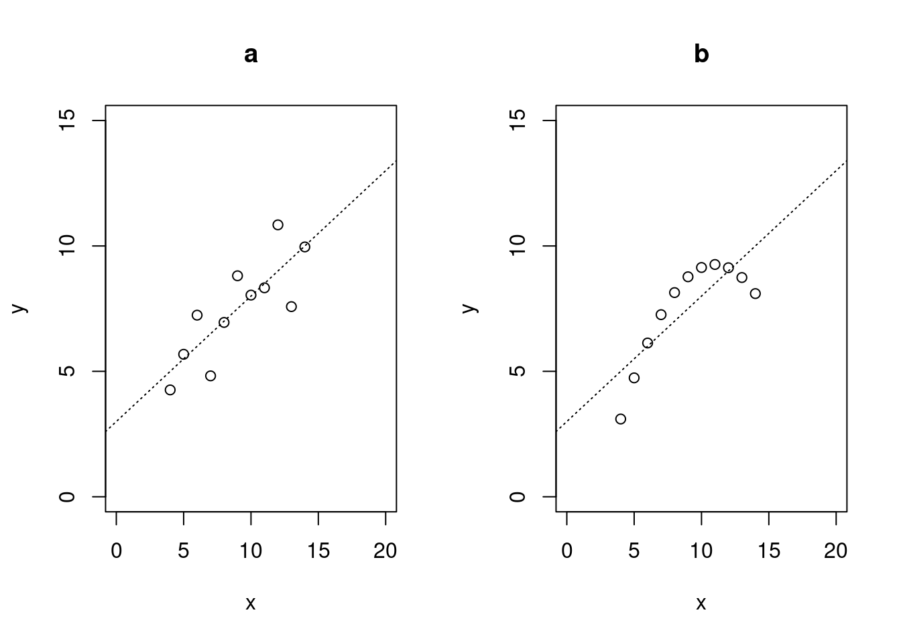
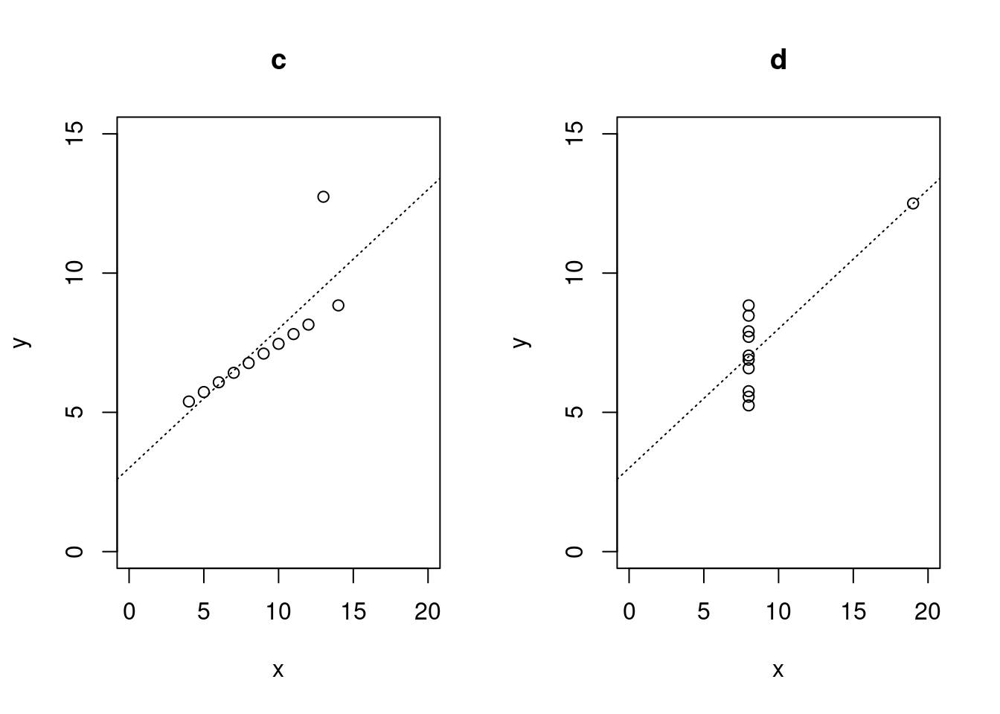

6 Multivariate dependencies
6.1 Measuring the linear association between two sets of random variables
6.1.1 Aim
The linear association between two scalar random variables \(x\) and \(y\) is measured by the correlation \(\text{Cor}(x, y) = \rho\).
In this chapter we now would like to explore how to generalise correlation to the case of two random vectors. Specifically, we would like to find a scalar measure of association between two random vectors (or equivalently two sets of random variables) \(\boldsymbol x= (x_1, \ldots, x_p)^T\) and \(\boldsymbol y= (y_1, \ldots, y_q)^T\) that contains correlation and also multiple correlation as special case.
We assume a joint correlation matrix \[ \boldsymbol P= \begin{pmatrix} \boldsymbol P_{\boldsymbol x} & \boldsymbol P_{\boldsymbol x\boldsymbol y} \\ \boldsymbol P_{\boldsymbol y\boldsymbol x} & \boldsymbol P_{\boldsymbol y} \\ \end{pmatrix} \] with cross-correlation matrix \(\boldsymbol P_{\boldsymbol x\boldsymbol y} = \boldsymbol P_{\boldsymbol y\boldsymbol x}^T\) and the within-group group correlations \(\boldsymbol P_{\boldsymbol x}\) and \(\boldsymbol P_{\boldsymbol y}\). If the cross-correlations vanish, \(\boldsymbol P_{\boldsymbol x\boldsymbol y} =0\), then the two random vectors are uncorrelated, and the joint correlation matrix becomes a diagonal block matrix \[ \boldsymbol P_{\text{indep}} = \begin{pmatrix} \boldsymbol P_{\boldsymbol x} & 0 \\ 0 & \boldsymbol P_{\boldsymbol y} \\ \end{pmatrix} \, . \]
To characterise the total association between \(\boldsymbol x\) and \(\boldsymbol y\) we are looking for a scalar quantity measuring the divergence of a distribution assuming the general joint correlation matrix \(\boldsymbol P\) from a distribution assuming the joint correlation matrix \(\boldsymbol P_{\text{indep}}\) for uncorrelated \(\boldsymbol x\) and \(\boldsymbol y\).
6.1.2 Known special cases
Ideally, in case of an univariate \(y\) but multivariate \(\boldsymbol x\) this measure should reduce to the squared multiple correlation or coefficient of determination \[ \text{MCor}(\boldsymbol x, y)^2 = \boldsymbol P_{y\boldsymbol x} \boldsymbol P_{\boldsymbol x}^{-1} \boldsymbol P_{\boldsymbol xy} \] This is well-known in linear regression to describe the strength of the total linear association between the predictors \(\boldsymbol x= (x_1, \ldots, x_p)^T\) and the response \(y\).
To derive the squared multiple correlation we may proceed as follows. First we whiten the random vector \(\boldsymbol x\) resulting in \(\boldsymbol z_{\boldsymbol x} = \boldsymbol W_{\boldsymbol x}\boldsymbol x=\boldsymbol Q_{\boldsymbol x}\boldsymbol P_{\boldsymbol x}^{-1/2}\boldsymbol V_{\boldsymbol x}^{-1/2}\boldsymbol x\) where \(\boldsymbol Q_{\boldsymbol x}\) is an orthogonal matrix. The correlations between each component in \(\boldsymbol z_{\boldsymbol x}\) and the response \(y\) are then \[ \boldsymbol \omega= \text{Cor}(\boldsymbol z_{\boldsymbol x}, y) = \boldsymbol Q_{\boldsymbol x} \boldsymbol P_{\boldsymbol x}^{-1/2} \boldsymbol P_{\boldsymbol xy} \] As \(\text{Var}(\boldsymbol z_{\boldsymbol x}) = \boldsymbol I\) and thus the components in \(\boldsymbol z_{\boldsymbol x}\) are uncorrelated we can simply add up the squared individual correlations to get as total association measure \[ \boldsymbol \omega^T \boldsymbol \omega= \sum_i \omega_i^2 = \boldsymbol P_{y\boldsymbol x} \boldsymbol P_{\boldsymbol x}^{-1} \boldsymbol P_{\boldsymbol xy} \] Note that the particular choice of the orthogonal matrix \(\boldsymbol Q_{\boldsymbol x}\) for whitening \(\boldsymbol x\) is not relevant for the squared multiple correlation.
Note that if the cross-correlations vanish (\(\boldsymbol P_{\boldsymbol xy} =0\)) then \(\text{MCor}(\boldsymbol x, y)^2=0\). If the correlation between the predictors vanishes (\(\boldsymbol P_{\boldsymbol x} = \boldsymbol I\)) then \(\text{MCor}(\boldsymbol x, y)^2 = \sum_i \rho_{y x_i}^2\), i.e. it is the sum of the squared cross-correlations.
If there is only a single predictor \(x\) then \(\boldsymbol P_{xy}=\rho\) and \(\boldsymbol P_{x} = 1\) and the squared multiple correlation reduces to the squared Pearson correlation \[ \text{Cor}(x, y)^2 = \rho^2 \, . \]
6.2 Canonical Correlation Analysis (CCA) aka CCA whitening
Canonical correlation analysis was invented by Harald Hotelling in 1936 20. CCA aims to characterise the linear dependence between to random vectors \(\boldsymbol x\) and \(\boldsymbol y\) by a set of canonical correlations \(\lambda_i\).
CCA works by simultaneously whitening the two random vectors \(\boldsymbol x\) and \(\boldsymbol y\) where the whitening matrices are chosen in such a way that the cross-correlation matrix between the resulting whitened variables becomes diagonal, and the elements on the diagonal correspond to the canonical correlations.
\[\begin{align*} \begin{array}{ll} \boldsymbol x= \begin{pmatrix} x_1 \\ \vdots \\ x_p \end{pmatrix} \\ \text{Dimension } p \end{array} \begin{array}{ll} \boldsymbol y= \begin{pmatrix} y_1 \\ \vdots \\ y_q \end{pmatrix} \\ \text{Dimension } q \end{array} \begin{array}{ll} \text{Var}(\boldsymbol x) = \boldsymbol \Sigma_{\boldsymbol x} = \boldsymbol V_{\boldsymbol x}^{1/2}\boldsymbol P_{\boldsymbol x}\boldsymbol V_{\boldsymbol x}^{1/2} \\ \text{Var}(\boldsymbol y) = \boldsymbol \Sigma_{\boldsymbol y} = \boldsymbol V_{\boldsymbol y}^{1/2}\boldsymbol P_{\boldsymbol y}\boldsymbol V_{\boldsymbol y}^{1/2} \\ \end{array} \end{align*}\]
\[\begin{align*} \begin{array}{cc} \text{Whitening of } \boldsymbol x\text{:} \\ \text{Whitening of } \boldsymbol y\text{:} \end{array} \begin{array}{cc} \boldsymbol z_{\boldsymbol x} = \boldsymbol W_{\boldsymbol x}\boldsymbol x=\boldsymbol Q_{\boldsymbol x}\boldsymbol P_{\boldsymbol x}^{-1/2}\boldsymbol V_{\boldsymbol x}^{-1/2}\boldsymbol x\\ \boldsymbol z_{\boldsymbol y} = \boldsymbol W_{\boldsymbol y}\boldsymbol y=\boldsymbol Q_{\boldsymbol y}\boldsymbol P_{\boldsymbol y}^{-1/2}\boldsymbol V_{\boldsymbol y}^{-1/2}\boldsymbol y \end{array} \end{align*}\] (note we use the correlation-based form of \(\boldsymbol W\))
Cross-correlation between \(\boldsymbol z_{\boldsymbol y}\) and \(\boldsymbol z_{\boldsymbol y}\):
\[\text{Cor}(\boldsymbol z_{\boldsymbol x},\boldsymbol z_{\boldsymbol y})=\boldsymbol Q_{\boldsymbol x}\boldsymbol K\boldsymbol Q_{\boldsymbol y}^T\]
with \(\boldsymbol K= \boldsymbol P_{\boldsymbol x}^{-1/2}\boldsymbol P_{\boldsymbol x\boldsymbol y}\boldsymbol P_{\boldsymbol y}^{-1/2}\).
Idea: we can choose suitable orthogonal matrices \(\boldsymbol Q_{\boldsymbol x}\) and \(\boldsymbol Q_{\boldsymbol y}\) by putting a structural constraint on the cross-correlation matrix.
CCA: we aim for a diagonal \(\text{Cor}(\boldsymbol z_{\boldsymbol x},\boldsymbol z_{\boldsymbol y})\) so that each component in \(\boldsymbol z_{\boldsymbol x}\) only influences one (the corresponding) component in \(\boldsymbol z_{\boldsymbol y}\).
Motivation: pairs of “modules” represented by components of \(\boldsymbol z_{\boldsymbol x}\) and \(\boldsymbol z_{\boldsymbol y}\) influencing each other (and not anyone other module).
\[ \begin{array}{ll} \boldsymbol z_{\boldsymbol x} = \begin{pmatrix} z^x_1 \\ z^x_2 \\ \vdots \\ z^x_p \end{pmatrix} & \boldsymbol z_{\boldsymbol y} = \begin{pmatrix} z^y_1 \\ z^y_2 \\ \vdots \\ z^y_q \end{pmatrix} \\ \end{array} \]
\[\text{Cor}(\boldsymbol z_{\boldsymbol x},\boldsymbol z_{\boldsymbol y}) = \begin{pmatrix} \lambda_1 & \dots & 0 \\ \vdots & \vdots \\ 0 & \dots & \lambda_m \end{pmatrix}\]
where \(\lambda_i\) are the canonical correlations and \(m=\min(p,q)\).
6.2.1 How to make cross-correlation matrix \(\text{Cor}(\boldsymbol z_{\boldsymbol x},\boldsymbol z_{\boldsymbol y})\) diagonal?
- Use Singular Value Decomposition (SVD) of matrix \(\boldsymbol K\):
\[\boldsymbol K= (\boldsymbol Q_{\boldsymbol x}^{\text{CCA}})^T \boldsymbol \Lambda\boldsymbol Q_{\boldsymbol y}^{\text{CCA}}\] where \(\boldsymbol \Lambda\) is the diagonal matrix containing the singular values of \(\boldsymbol K\) - This yields orthogonal matrices \(\boldsymbol Q_{\boldsymbol x}^{\text{CCA}}\) and \(\boldsymbol Q_{\boldsymbol y}^{\text{CCA}}\) and thus the desired whitening matrices \(\boldsymbol W_{\boldsymbol x}^{\text{CCA}}\) and \(\boldsymbol W_{\boldsymbol y}^{\text{CCA}}\)
- As a result \(\text{Cor}(\boldsymbol z_{\boldsymbol x},\boldsymbol z_{\boldsymbol y}) = \boldsymbol \Lambda\) i.e. singular values \(\lambda_i\) of \(\boldsymbol K\) are the desired canonical correlations!
\(\longrightarrow\) \(\boldsymbol Q_{\boldsymbol x}^{\text{CCA}}\) and \(\boldsymbol Q_{\boldsymbol y}^{\text{CCA}}\) are determined by the diagonality constraint (and note these are different to the other previously discussed whitening methods).
Note that the signs of corresponding in columns in \(\boldsymbol Q_{\boldsymbol x}^{\text{CCA}}\) and \(\boldsymbol Q_{\boldsymbol y}^{\text{CCA}}\) are not identified. Traditionally, in an SVD the signs are chosen such that the singular values are positive. However, if we impose positive-diagonality on \(\boldsymbol Q_{\boldsymbol x}^{\text{CCA}}\) and \(\boldsymbol Q_{\boldsymbol y}^{\text{CCA}}\), and thus positive-diagonality on the cross-correlations \(\boldsymbol \Psi_{\boldsymbol x}\) and \(\boldsymbol \Psi_{\boldsymbol y}\), then the canonical correlations may take on both positive and negative values.
6.3 Vector correlation and RV coefficient
6.3.1 Vector alienation coefficient
In his 1936 paper introducing canonical correlation analysis Hotelling also proposed the vector alienation coefficient defined as \[ \begin{split} a(\boldsymbol x, \boldsymbol y) &= \frac{\det(\boldsymbol P)}{\det(\boldsymbol P_{\text{indep}}) } \\ & = \frac{\det( \boldsymbol P) }{ \det(\boldsymbol P_{\boldsymbol x}) \, \det(\boldsymbol P_{\boldsymbol y}) } \end{split} \] With \(\boldsymbol K= \boldsymbol P_{\boldsymbol x}^{-1/2} \boldsymbol P_{\boldsymbol x\boldsymbol y} \boldsymbol P_{\boldsymbol y}^{-1/2}\) the vector alienation coefficient can be written (using the Weinstein-Aronszajn determinant identity and the formula for the determinant of block-structured matrices) as \[ \begin{split} a(\boldsymbol x, \boldsymbol y) & = \det \left( \boldsymbol I_p - \boldsymbol K\boldsymbol K^T \right) \\ & = \det \left( \boldsymbol I_q - \boldsymbol K^T \boldsymbol K\right) \\ &= \prod_{i=1}^m (1-\lambda_i^2) \\ \end{split} \] where the \(\lambda_i\) are the singular values of \(\boldsymbol K\), i.e. the canonical correlations for the pair \(\boldsymbol x\) and \(\boldsymbol y\). Therefore, the vector alienation coefficient is computed as a summary statistic of the canonical correlations.
If \(\boldsymbol P_{\boldsymbol x\boldsymbol y} = 0\) und thus \(\boldsymbol x\) and \(\boldsymbol y\) are uncorrelated then \(\boldsymbol P= \boldsymbol P_{\text{indep}}\) and thus by construction the vector alienation coefficient \(a(\boldsymbol x, \boldsymbol y)=1\). Hence, the vector alienation coefficient is itself not a generalisation of the squared multiple correlation to the case of two random vectors as such a quantity should vanish in this case.
6.3.2 Rozeboom vector correlation
Instead, Rozeboom (1965) 21 proposed to use as squared vector correlation the complement of the vector alienation coefficient \[ \begin{split} \text{VCor}(\boldsymbol x, \boldsymbol y)^2 &= \rho^2_{\boldsymbol x\boldsymbol y} = 1 - a(\boldsymbol x, \boldsymbol y) \\ & = 1- \det\left( \boldsymbol I_p - \boldsymbol K\boldsymbol K^T \right) \\ & = 1- \det\left( \boldsymbol I_q - \boldsymbol K^T \boldsymbol K\right) \\ & =1- \prod_{i=1}^m (1-\lambda_i^2) \\ \end{split} \] If \(\boldsymbol P_{\boldsymbol x\boldsymbol y} = 0\) then \(\boldsymbol K=\boldsymbol 0\) and hence \(\text{VCor}(\boldsymbol x, \boldsymbol y)^2 = 0\).
Moreover, if either \(p=1\) or \(q=1\) the squared vector correlation reduces to the corresponding squared multiple correlation, which in turn for both \(p=1\) and \(q=1\) becomes the squared Pearson correlation.
You can find the derivation in Example Sheet 10.
Thus, Rozeboom’s vector correlation indeed generalises both Pearson correlation and the multiple correlation coefficient.
6.3.3 RV coefficient
Another common approach to measure association between two random vectors is the RV coefficient introduced by Robert and Escoufier in 1976 as \[ RV(\boldsymbol x, \boldsymbol y) = \frac{ \text{Tr}(\boldsymbol \Sigma_{\boldsymbol x\boldsymbol y} \boldsymbol \Sigma_{\boldsymbol y\boldsymbol x} )}{ \sqrt{ \text{Tr}(\boldsymbol \Sigma_{\boldsymbol x}^2) \text{Tr}(\boldsymbol \Sigma_{\boldsymbol y}^2) } } \] The main advantage of the RV coefficient is that it is easier to compute than the Rozeboom vector correlation as it uses the matrix trace rather than the matrix determinant.
For \(q=p=1\) the RV coefficient reduces to the squared correlation. However, the RV coefficient does not reduce to the multiple correlation coefficient for \(q=1\) and \(p > 1\), and therefore the RV coefficient cannot be considered a coherent generalisation of Pearson and multiple correlation to the case when \(\boldsymbol x\) and \(\boldsymbol y\) are random vectors.
See also Worksheet 10.
6.4 Limits of linear models and correlation
6.4.1 Correlation measures only linear dependence
Linear models and measures of linear association (correlation) are very effective tools. However, it is important to recognise their limits especially when modelling nonlinear relationships.
A very simple demonstration of this is given by the following example. Assume \(x\) is a normally distributed random variable with \(x \sim N(0, \sigma^2)\) with mean zero and some variance \(\sigma^2\). From \(x\) we construct a second random variable \(y = x^2\). Despite that \(y\) is a function of \(x\) with no extra added noise it is easy to show that \(\text{Cov}(x, y) = \text{Cov}(x, x^2)=0\). Hence, the correlation \(\text{Cor}(x, y)= \text{Cor}(x, x^2) = 0\) also vanishes.
This can be empirically verified by simulating data from a normal distribution (here with \(\sigma^2=4)\) and estimating the correlation:
## [1] 0.001217943Thus, correlation is zero even though \(x\) and \(y\) are fully dependent variables. This is because correlation only measures linear association, and the relationship between \(x\) and \(y\) is nonlinear.
6.4.2 Anscombe data sets
Using correlation (and more generally linear models) blindly can easily hide the underlying complexity of the analysed data. This is demonstrated by the classic “Anscombe quartet” of data sets presented in his 1973 paper 22 -

As evident from the scatter plots the relationship between the two variables \(x\) and \(y\) is very different in the four cases! However, intriguingly all four data sets share exactly the same linear characteristics and summary statistics:
- Means \(m_x = 9\) and \(m_y = 7.5\)
- Variances \(s^2_x = 11\) and \(s^2_y = 4.13\)
- Correlation \(r = 0.8162\)
- Linear model fit with intercept \(a=3.0\) and slope \(b=0.5\)
Thus, in actual data analysis it is always a good idea to inspect the data visually to get a first impression whether using a linear model makes sense.
In the above only data set “a” follows a linear model. Data set “b” represents a quadratic relationship. Data set “c” is linear but with an outlier that disturbs the linear relationship. Finally data set “d” also contains an outlier but also represent a case where \(y\) is (apart from the outlier) is not dependent on \(x\).
In the Worksheet 10 a more recent version of the Anscombe quartet will be analysed in the form of the “datasauRus” dozen - 13 highly nonlinear datasets that all share the same linear characteristics.
6.5 Mutual information as generalisation of correlation
6.5.1 Overview
A more general way than the vector correlation to measure multivariate association is mutual information (MI) which not only covers linear but also non-linear associations.
As we will see below the Rozeboom vector correlation arises naturally when computing the MI for the multivariate normal distribution, hence MI also recovers well-known measures of linear association (including multiple correlation and simple correlation), thus truly generalising correlation as measure of association.
6.5.2 Definition of mutual information
Recall the definition of Kullback-Leibler divergence, or relative entropy, between two distributions: \[ D_{\text{KL}}(F, G) := \text{E}_F \log \biggl( \frac{f(\boldsymbol x)}{g(\boldsymbol x)} \biggr) \] Here \(F\) plays the role of the reference distribution and \(G\) is an approximating distribution, with \(f\) and \(g\) being the corresponding density functions (see MATH27720 Statistics 2).
The Mutual Information (MI) between two random variables \(\boldsymbol x\) and \(\boldsymbol y\) is defined as the KL divergence between the corresponding joint distribution and the product distribution: \[ \text{MI}(\boldsymbol x, \boldsymbol y) = D_{\text{KL}}(F_{\boldsymbol x,\boldsymbol y}, F_{\boldsymbol x} F_{\boldsymbol y}) = \text{E}_{F_{\boldsymbol x,\boldsymbol y}} \log \biggl( \frac{f(\boldsymbol x, \boldsymbol y)}{f(\boldsymbol x) \, f(\boldsymbol y)} \biggr) . \] Thus, MI measures how well the joint distribution can be approximated by the product distribution (which would be the appropriate joint distribution if \(\boldsymbol x\) and \(\boldsymbol y\) are independent). Since MI is an application of KL divergence is shares all its properties. In particular, \(\text{MI}(\boldsymbol x, \boldsymbol y)=0\) implies that the joint distribution and product distributions are the same. Hence the two random variables \(\boldsymbol x\) and \(\boldsymbol y\) are independent if the mutual information vanishes.
6.5.3 Mutual information between two normal scalar variables
The KL divergence between two multivariate normal distributions \(F_{\text{ref}}\) and \(F\) is \[ D_{\text{KL}}(F_{\text{ref}}, F) = \frac{1}{2} \biggl\{ (\boldsymbol \mu-\boldsymbol \mu_{\text{ref}})^T \boldsymbol \Sigma^{-1} (\boldsymbol \mu-\boldsymbol \mu_{\text{ref}}) + \text{Tr}\biggl(\boldsymbol \Sigma^{-1} \boldsymbol \Sigma_{\text{ref}} \biggr) - \log \det \biggl( \boldsymbol \Sigma^{-1} \boldsymbol \Sigma_{\text{ref}} \biggr) - d \biggr\} \] This allows compute the mutual information \(\text{MI}_{\text{norm}}(x,y)\) between two univariate random variables \(x\) and \(y\) that are correlated and assumed to be jointly bivariate normal. Let \(\boldsymbol z= (x, y)^T\). The joint bivariate normal distribution is characterised by the mean \(\text{E}(\boldsymbol z) = \boldsymbol \mu= (\mu_x, \mu_y)^T\) and the covariance matrix \[ \boldsymbol \Sigma= \begin{pmatrix} \sigma^2_x & \rho \, \sigma_x \sigma_y \\ \rho \, \sigma_x \sigma_y & \sigma^2_y \\ \end{pmatrix} \] where \(\text{Cor}(x,y)= \rho\). If \(x\) and \(y\) are independent then \(\rho=0\) and \[ \boldsymbol \Sigma_{\text{indep}} = \begin{pmatrix} \sigma^2_x & 0 \\ 0 & \sigma^2_y \\ \end{pmatrix} \,. \] The product \[ \boldsymbol A= \boldsymbol \Sigma_{\text{indep}}^{-1} \boldsymbol \Sigma= \begin{pmatrix} 1 & \rho \frac{\sigma_y}{\sigma_x} \\ \rho \frac{\sigma_x}{\sigma_y} & 1 \\ \end{pmatrix} \] has trace \(\text{Tr}(\boldsymbol A) = 2\) and determinant \(\det(\boldsymbol A) = 1-\rho^2\).
With this the mutual information between \(x\) and \(y\) can be computed as \[ \begin{split} \text{MI}_{\text{norm}}(x, y) &= D_{\text{KL}}(N(\boldsymbol \mu, \boldsymbol \Sigma), N(\boldsymbol \mu,\boldsymbol \Sigma_{\text{indep}} )) \\ & = \frac{1}{2} \biggl\{ \text{Tr}\biggl(\boldsymbol \Sigma^{-1}_{\text{indep}} \boldsymbol \Sigma\biggr) - \log \det \biggl( \boldsymbol \Sigma^{-1}_{\text{indep}} \boldsymbol \Sigma\biggr) - 2 \biggr\} \\ & = \frac{1}{2} \biggl\{ \text{Tr}( \boldsymbol A) - \log \det( \boldsymbol A) - 2 \biggr\} \\ &= -\frac{1}{2} \log(1-\rho^2) \\ & \approx \frac{\rho^2}{2} \\ \end{split} \]
Thus \(\text{MI}_{\text{norm}}(x,y)\) is is a one-to-one function of the squared correlation \(\rho^2\) between \(x\) and \(y\):
For small values of correlation \(2 \, \text{MI}_{\text{norm}}(x,y) \approx \rho^2\).
6.5.4 Mutual information between two normally distributed random vectors
The mutual information \(\text{MI}_{\text{norm}}(\boldsymbol x,\boldsymbol y)\) between two multivariate normal random vector \(\boldsymbol x\) and \(\boldsymbol y\) can be computed in a similar fashion as in the bivariate case.
Let \(\boldsymbol z= (\boldsymbol x, \boldsymbol y)^T\) with dimension \(d=p+q\). The joint multivariate normal distribution is characterised by the mean \(\text{E}(\boldsymbol z) = \boldsymbol \mu= (\boldsymbol \mu_x^T, \boldsymbol \mu_y^T)^T\) and the covariance matrix \[ \boldsymbol \Sigma= \begin{pmatrix} \boldsymbol \Sigma_{\boldsymbol x} & \boldsymbol \Sigma_{\boldsymbol x\boldsymbol y} \\ \boldsymbol \Sigma_{\boldsymbol x\boldsymbol y}^T & \boldsymbol \Sigma_{\boldsymbol y} \\ \end{pmatrix} \,. \] If \(\boldsymbol x\) and \(\boldsymbol y\) are independent then \(\boldsymbol \Sigma_{\boldsymbol x\boldsymbol y} = 0\) and \[ \boldsymbol \Sigma_{\text{indep}} = \begin{pmatrix} \boldsymbol \Sigma_{\boldsymbol x} & 0 \\ 0 & \boldsymbol \Sigma_{\boldsymbol y} \\ \end{pmatrix} \, . \] The product \[ \begin{split} \boldsymbol A& = \boldsymbol \Sigma_{\text{indep}}^{-1} \boldsymbol \Sigma= \begin{pmatrix} \boldsymbol I_p & \boldsymbol \Sigma_{\boldsymbol x}^{-1} \boldsymbol \Sigma_{\boldsymbol x\boldsymbol y} \\ \boldsymbol \Sigma_{\boldsymbol y}^{-1} \boldsymbol \Sigma_{\boldsymbol y\boldsymbol x} & \boldsymbol I_q \\ \end{pmatrix} \\ & = \begin{pmatrix} \boldsymbol I_p & \boldsymbol V_{\boldsymbol x}^{-1/2} \boldsymbol P_{\boldsymbol x}^{-1} \boldsymbol P_{\boldsymbol x\boldsymbol y} \boldsymbol V_{\boldsymbol y}^{1/2} \\ \boldsymbol V_{\boldsymbol y}^{-1/2} \boldsymbol P_{\boldsymbol y}^{-1} \boldsymbol P_{\boldsymbol y\boldsymbol x} \boldsymbol V_{\boldsymbol x}^{1/2} & \boldsymbol I_q \\ \end{pmatrix}\\ \end{split} \] has trace \(\text{Tr}(\boldsymbol A) = d\) and determinant \[ \begin{split} \det(\boldsymbol A) & = \det( \boldsymbol I_p - \boldsymbol K\boldsymbol K^T ) \\ &= \det( \boldsymbol I_q - \boldsymbol K^T \boldsymbol K) \\ \end{split} \] with \(\boldsymbol K= \boldsymbol P_{\boldsymbol x}^{-1/2} \boldsymbol P_{\boldsymbol x\boldsymbol y} \boldsymbol P_{\boldsymbol y}^{-1/2}\). With \(\lambda_1, \ldots, \lambda_m\) the singular values of \(\boldsymbol K\) (i.e. the canonical correlations between \(\boldsymbol x\) and \(\boldsymbol y\)) we get \[ \det(\boldsymbol A) = \prod_{i=1}^m (1-\lambda_i^2) \]
The mutual information between \(\boldsymbol x\) and \(\boldsymbol y\) is then \[ \begin{split} \text{MI}_{\text{norm}}(\boldsymbol x, \boldsymbol y) &= D_{\text{KL}}(N(\boldsymbol \mu, \boldsymbol \Sigma), N(\boldsymbol \mu,\boldsymbol \Sigma_{\text{indep}} )) \\ & = \frac{1}{2} \biggl\{ \text{Tr}\biggl( \boldsymbol \Sigma^{-1}_{\text{indep}} \boldsymbol \Sigma\biggr) - \log \det \biggl( \boldsymbol \Sigma^{-1}_{\text{indep}} \boldsymbol \Sigma\biggr) - d \biggr\} \\ & = \frac{1}{2} \biggl\{ \text{Tr}( \boldsymbol A) - \log \det( \boldsymbol A) - d \biggr\} \\ &=-\frac{1}{2} \sum_{i=1}^m \log(1-\lambda_i^2)\\ &=-\frac{1}{2} \log \left( \prod_{i=1}^m (1-\lambda_i^2) \right)\\ &=-\frac{1}{2} \log \left( 1- \text{VCor}(\boldsymbol x, \boldsymbol y)^2 \right)\\ \end{split} \]
From the above we see that \(\text{MI}_{\text{norm}}(\boldsymbol x, \boldsymbol y)\) is simply the sum of the MIs resulting from the individual canonical correlations \(\lambda_i\) with the same functional link between the MI and the squared correlation as in the bivariate normal case.
Furthermore we obtain that \[ \text{MI}_{\text{norm}}(\boldsymbol x,\boldsymbol y) = -\frac{1}{2} \log(1 - \text{VCor}(\boldsymbol x, \boldsymbol y)^2 ) \approx \frac{1}{2} \text{VCor}(\boldsymbol x, \boldsymbol y)^2 \] Thus, in the multivariate case \(\text{MI}_{\text{norm}}(\boldsymbol x\boldsymbol y)\) has again exactly the same functional relationship with the squared vector correlation \(\text{VCor}(\boldsymbol x, \boldsymbol y)^2\) as the \(\text{MI}_{\text{norm}}(x, y)\) for two univariate variables with squared Pearson correlation \(\rho^2\).
Thus, Rozeboom’s vector correlation emerges as as a special case of mutual information computed for jointly multivariate normally distributed variables.
6.5.5 Using MI for variable selection
A very general way to write down a model predicting \(\boldsymbol y\) by \(\boldsymbol x\) is as follows:
- \(F_{\boldsymbol y|\boldsymbol x}\) is a conditional distribution of \(\boldsymbol y\) given predictors \(\boldsymbol x\) and
- \(F_{\boldsymbol y}\) is the marginal distribution of \(\boldsymbol y\) without predictors.
Typically \(F_{\boldsymbol y|\boldsymbol x}\) is a complex model and \(F_{\boldsymbol y}\) a simple model (no predictors). Note that the predictive model can assume any form (incl. nonlinear).
Intriguingly the expected KL divergence between the conditional and the marginal distribution \[ \text{E}_{F_{\boldsymbol x}}\, D_{\text{KL}}(F_{\boldsymbol y|\boldsymbol x}, F_{\boldsymbol y} ) = \text{MI}(\boldsymbol x, \boldsymbol y) \] is equal to mutual information between \(\boldsymbol x\) and \(\boldsymbol y\)! Thus \(\text{MI}(\boldsymbol x, \boldsymbol y)\) measures the impact of conditioning. If the MI is small (i.e. close to zero) then \(\boldsymbol x\) is not useful in predicting \(\boldsymbol y\).
The above identity can be verified as follows. The KL divergence between \(F_{\boldsymbol y|\boldsymbol x}\) and \(F_{\boldsymbol y}\) is given by \[ D_{\text{KL}}(F_{\boldsymbol y|\boldsymbol x}, F_{\boldsymbol y} ) = \text{E}_{F_{\boldsymbol y|\boldsymbol x}} \log\biggl( \frac{f(\boldsymbol y|\boldsymbol x) }{ f(\boldsymbol y)} \biggr) \, , \] which is a random variable since it depends on \(\boldsymbol x\). Taking the expectation with regard to \(F_{\boldsymbol x}\) (the distribution of \(\boldsymbol x\)) we get \[ \begin{split} \text{E}_{F_{\boldsymbol x}} D_{\text{KL}}(F_{\boldsymbol y|\boldsymbol x}, F_{\boldsymbol y} ) &= \text{E}_{F_{\boldsymbol x}} \text{E}_{F_{\boldsymbol y|\boldsymbol x}} \log \biggl(\frac{ f(\boldsymbol y|\boldsymbol x) f(\boldsymbol x) }{ f(\boldsymbol y) f(\boldsymbol x) } \biggr)\\ & = \text{E}_{F_{\boldsymbol x,\boldsymbol y}} \log \biggl(\frac{ f(\boldsymbol x,\boldsymbol y) }{ f(\boldsymbol y) f(\boldsymbol x) } \biggr) = \text{MI}(\boldsymbol x,\boldsymbol y) \,. \\ \end{split} \]
Because of this link of MI with conditioning the MI between response and predictor variables is often used for variable and feature selection in general models.
6.5.6 Other measures of general dependence
In principle, MI can be computed for any distribution and model and thus applies to both normal and non-normal models, and to both linear and nonlinear relationships.
Besides mutual information there are others measures of general dependence between multivariate random variables.
Two important measures to capture nonlinear association that have been proposed in recent literature are
- distance correlation and
- the maximal information coefficient (MIC and \(\text{MIC}_e\)).
6.6 Graphical models
6.6.1 Purpose
Graphical models combine features from
- graph theory
- probability
- statistical inference
The literature on graphical models is huge, we focus here only on two commonly used models:
- DAGs (directed acyclic graphs), all edges are directed, no directed loops (i.e. no cycles, hence “acyclic”)
- GGM (Gaussian graphical models), all edges are undirected
Graphical models provide probabilistic models for trees and for networks, with random variables represented by nodes in the graphs, and branches representing conditional dependencies. In this regard they generalise both the tree-based clustering approaches as well as the probabilistic non-hierarchical methods (GMMs).
However, the class of graphical models goes much beyond simple unsupervised learning models. It also includes regression, classification, time series models etc. For an overview see, e.g., the reference book by Murphy (2023).
6.6.2 Basic notions from graph theory
- Mathematically, a graph \(G = (V, E)\) consists of a a set of vertices or nodes \(V = \{v_1, v_2, \ldots\}\) and a set of branches or edges \(E = \{ e_1, e_2, \ldots \}\).
- Edges can be undirected or directed.
- Graphs containing only directed edges are directed graphs, and likewise graphs containing only undirected edges are called undirected graphs. Graphs containing both directed and undirected edges are called partially directed graphs.
- A path is a sequence of of vertices such that from each of its vertices there is an edge to the next vertex in the sequence.
- A graph is connected when there is a path between every pair of vertices.
- A cycle is a path in a graph that connects a node with itself.
- A connected graph with no cycles is a called a tree.
- The degree of a node is the number of edges it connects with. If edges are all directed the degree of a node is the sum of the in-degree and out-degree, which counts the incoming and outgoing edges, respectively.
- External nodes are nodes with degree 1. In a tree-structured graph these are also called leaves.
Some notions are only relevant for graphs with directed edges:
- In a directed graph the parent node(s) of vertex \(v\) is the set of nodes \(\text{pa}(v)\) directly connected to \(v\) via edges directed from the parent node(s) towards \(v\).
- Conversely, \(v\) is called a child node of \(\text{pa}(v)\). Note that a parent node can have several child nodes, so \(v\) may not be the only child of \(\text{pa}(v)\).
- In a directed tree graph, each node has only a single parent, except for one particular node that has no parent at all (this node is called the root node).
- A DAG, or directed acyclic graph, is a directed graph with no directed cycles. A (directed) tree is a special version of a DAG.
6.6.3 Probabilistic graphical models
A graphical model uses a graph to describe the relationship between random variables \(x_1, \ldots, x_d\). The variables are assumed to have a joint distribution with density/mass function \(p(x_1, x_2, \ldots, x_d)\). Each random variable is placed in a node of the graph.
The structure of the graph and the type of the edges connecting (or not connecting) any pair of nodes/variables is used to describe the conditional dependencies, and to simplify the joint distribution.
Thus, a graphical model is in essence a visualisation of the joint distribution using structural information from the graph helping to understand the mutual relationship among the variables.
6.6.4 Directed graphical models
In a directed graphical model the graph structure is assumed to be a DAG (or a directed tree, which is also a DAG).
Then the joint probability distribution can be factorised into a product of conditional probabilities as follows: \[ p(x_1, x_2, \ldots, x_d) = \prod_i p(x_i | \text{pa}(x_i)) \] Thus, the overall joint probability distribution is specified by local conditional distributions and the graph structure, with the directions of the edges providing the information about parent-child node relationships.
Probabilistic DAGs are also known as “Bayesian networks”.
Idea: by trying out all possible trees/graphs and fitting them to the data using maximum likelihood (or Bayesian inference) we hope to be able identify the graph structure of the data-generating process.
Challenges
- in the tree/network the internal nodes are usually not known, and thus have to be treated as latent variables.
Answer: To impute the states at these nodes we may use the EM algorithm as in GMMs (which in fact can be viewed as graphical models, too!).
- If we treat the internal nodes as unknowns we need to marginalise over the internal nodes, i.e. we need to sum / integrate over all possible set of states of the internal nodes!
Answer: This can be handled very effectively using the Viterbi algorithm which is essentially an application of the generalised distributive law. In particular for tree graphs this means that the summations occurs locally at each node and propagates recursively across the tree.
- In order to infer the tree or network structure the space of all trees or networks need to be explored. This is not possible in an exhaustive fashion unless the number of variables in the tree is very small.
Answer: Solution: use heuristic approaches for tree and network search!
- Furthermore, there exist so-called “equivalence classes” of graphical models, i.e. sets of graphical models that share the same joint probability distribution. Thus, all graphical models within the same equivalence class cannot be distinguished from observational data, even with infinite sample size!
Answer: this is a fundamental mathematical problem of identifiability so there is now way around this issue. However, on the positive side, this also implies that the search through all graphical models can be restricted to finding the so-called “essential graph” (e.g. https://projecteuclid.org/euclid.aos/1031833662 )
Conclusion: using directed graphical models for structure discovery is very time consuming and computationally demanding for anything but small toy data sets.
This also explains why heuristic and non-model based approaches (such as hierarchical clustering) are so popular even though full statistical modelling is in principle possible.
6.6.5 Undirected graphical models
Another class of graphical models are models that contain only undirected edges. These undirected graphical models are used to represent the pairwise conditional (in)dependencies among the variables in the graph, and the resulting model is therefore also called conditional independence graph.
Suppose \(x_i\) and \(x_j\) are two random variables/nodes from \(\{x_1, \ldots, x_d\}\), and the set \(\{x_k\}\) represents all other variables/nodes with \(k\neq i\) and \(k \neq j\). Then the variables \(x_i\) and \(x_j\) are conditionally independent given all the other variables \(\{x_k\}\) \[ x_i \perp\!\!\!\perp x_j | \{x_k\} \] if the joint probability density for all variables \(\{x_1, \ldots, x_d\}\) factorises as \[ p(x_1, x_2, \ldots, x_d) = p(x_i | \{x_k\}) \, p(x_j | \{x_k\}) \, p(\{x_k\}) \,. \] or equivalently \[ \frac{p(x_i, x_j, \ldots, x_d)}{p(\{x_k\})} = p(x_i, x_j | \{x_k\}) = p(x_i | \{x_k\}) \, p(x_j | \{x_k\}) \,. \]
In the corresponding conditional independence graph note there is no edge between \(x_i\) and \(x_j\), as in such a graph missing edges correspond to conditional independence between the respective non-connected nodes.
6.6.5.1 Gaussian graphical model
Assuming that \(x_1, \ldots, x_d\) are jointly normally distributed, i.e. \(\boldsymbol x\sim N(\boldsymbol \mu, \boldsymbol \Sigma)\), it turns out that it is straightforward to identify the pairwise conditional independencies. From \(\boldsymbol \Sigma\) we first obtain the precision matrix \[\boldsymbol \Omega= (\omega_{ij}) = \boldsymbol \Sigma^{-1} \,.\] Crucially, it can be shown that \(\omega_{ij} = 0\) implies \(x_i \perp\!\!\!\perp x_j \,|\, \{ x_k \}\). Hence, from the precision matrix \(\boldsymbol \Omega\) we can directly read off all the pairwise conditional independencies among the variables \(x_1, x_2, \ldots, x_d\).
Often, the covariance matrix \(\boldsymbol \Sigma\) is dense (few zeros) but the corresponding precision matrix \(\boldsymbol \Omega\) is sparse (many zeros).
The conditional independence graph computed for normally distributed variables is called a Gaussian graphical model, or short GGM. A further alternative name commonly used is covariance selection model.
6.6.6 Null distribution of the empirical correlation coefficient
Suppose we have two uncorrelated random variables \(x\) and \(y\) with \(\rho = \text{Cor}(x, y) =0\). After observing data \(x_1, \ldots, x_n\) and \(y_1, \ldots, y_n\) we compute the the empirical covariance matrix \(\hat{\boldsymbol \Sigma}_{xy}\) and from it the empirical correlation coefficient \(r = \widehat{\text{Cor}}(x, y)\).
The distribution of the empirical correlation assuming \(\rho=0\) is useful as null-model for testing whether the underlying correlation is in fact zero having observed empirical correlation \(r\). If \(x\) and \(y\) are normally distributed with \(\rho=0\) the distribution of the empirical correlation \(r\) has mean \(\text{E}(r)=0\) and variance \(\text{Var}(r)=\frac{1}{\kappa}\). Here \(\kappa\) is the degree of freedom of the null distribution which for standard correlation is \(\kappa=n-1\). Furthermore, the squared empirical correlation is distributed according to a Beta distribution \[ r^2 \sim \text{Beta}\left(\frac{1}{2}, \frac{\kappa-1}{2}\right) \]
For partial correlation the null distribution of \(r^2\) has the same form but with a different degree of freedom. Specifically, \(\kappa\) is reduced by the number of variables being conditioned on. If for \(d\) dimensions we condition on \(d-2\) variables the resulting degree of freedom is \(\kappa =n-1 - (d-2) = n-d+1\). For \(d=2\) we get back the degree of freedom for standard empirical correlation.
6.6.7 Algorithm for learning GGMs
From the above we can devise a simple algorithm to learn Gaussian graphical model (GGM) from data:
- Estimate covariance \(\hat{\boldsymbol \Sigma}\) (in such a way that it is invertible!)
- Compute corresponding partial correlations
- If \(\hat{\rho}_{ij|\text{rest}} \approx 0\) then there is (approx.) conditional independence between \(x_i\) and \(x_j\).
The test for conditional independence is done by statistical testing for vanishing partial correlation. Specifically, we compute the \(p\)-value assuming that the true underlying partial correlation is zero and then decide whether to reject the null assumption of zero partial correlation.
If there are many edges tested simultaneously we may need to adjust (i.e reduce) the test threshold, for example applying Bonferroni or FDR methods.
6.6.8 Example: exam score data
This is a data set from Mardia et al. (1979) and features \(d=5\) variables measured on \(n=88\) subjects.
Correlations (rounded to 2 digits):
## mechanics vectors algebra analysis statistics
## mechanics 1.00 0.55 0.55 0.41 0.39
## vectors 0.55 1.00 0.61 0.49 0.44
## algebra 0.55 0.61 1.00 0.71 0.66
## analysis 0.41 0.49 0.71 1.00 0.61
## statistics 0.39 0.44 0.66 0.61 1.00Partial correlations (rounded to 2 digits):
## mechanics vectors algebra analysis statistics
## mechanics 1.00 0.33 0.23 0.00 0.02
## vectors 0.33 1.00 0.28 0.08 0.02
## algebra 0.23 0.28 1.00 0.43 0.36
## analysis 0.00 0.08 0.43 1.00 0.25
## statistics 0.02 0.02 0.36 0.25 1.00Note that there are no zero correlations but there are four partial correlations close to 0, indicating conditional independence between:
- analysis and mechanics,
- statistics and mechanics,
- analysis and vectors, and
- statistics and vectors.
The can be verified by computing the normal \(p\)-values for the partial correlations (with \(\kappa=84\) as degree of freedom):
## mechanics vectors algebra analysis statistics
## mechanics NA 0.002 0.034 0.988 0.823
## vectors NA NA 0.009 0.477 0.854
## algebra NA NA NA 0.000 0.001
## analysis NA NA NA NA 0.020
## statistics NA NA NA NA NAThere are six edges with small \(p\)-value (smaller than say 0.05) and these correspond to the edges for which the null assumption of zero partial correlation can be rejected so that out of ten possible edges four are not statistically significant. Therefore the conditional independence graph looks as follows:
Mechanics Analysis
| \ / |
| Algebra |
| / \ |
Vectors Statistics